第１章 先天性代謝異常
動物や植物の属や種を区別するのに役立つ構造や形の違いは、自然における最も明白な事実である。これらを見つけるには科学の訓練を必要とせず、教育ていどが低い知能の人であっても気がつかないことはない。しかし知識が増えるとともにこの見かけ上の違いおよび形から形への発生的な関係の基礎に、均一性のあることを学ぶ。生体組織の化学的成分およびこれらの組織が作られ壊される代謝過程に関しては、進展が逆方向である。何故かと言うと、表面的な均一性の後ろに、見かけ上は明らかではないが形態よりもずっと実際的な違いのあることを、化学生理学の発展は我々に教えているからである。
異なる属の動物でヘモグロビンの究極的な成分および結晶形に違いのあることは古くから知られていた。もっとも明白な例の幾つかをあげるとすると、動物の脂肪の成分が同じようでないことはよく知られているし、胆汁酸の違いも同様である。代謝の最終産物が異なる例としてキヌレニン酸をあげることができる。これは犬族の尿に存在するものであって、タンパク質のトリプトファン部分を取り扱う方法が属によって違っていることを示している。鳥や爬虫類は廃棄する窒素の大量を尿酸として排泄するのに対して、哺乳動物の尿の窒素構成分の大部分は尿素である。
厳密に化学的な方法によってももっと広範に研究すると Przibram（１）が筋タンパク質について前駆的な研究を行ったように数えきれないほどの小さい違いが示されるであろう。最近の研究者たちが開発した沈降素法のような超化学的な方法はもっと細かい違いを明らかにし、個々の種に属するものはそれぞれ特異的なタンパク質からなり、それらは種の関係が密接であればあるだけ互いに似ていることを教えている。
このような特異的な違いは分解によって得られる単純な最終産物よりは、明らかに高度に複雑なタンパク質に見られるものである。タンパク質分子の構造の中に入っている多くのアミノ酸は殆ど数えることができないグループを作り割合をしていて、それぞれの新しいグループは異なったタンパク質を形成する。しかし分解するとすべて似ていて尿素と二酸化炭素のように同じ単純な最終産物を与えるであろう。
化学的な構造および過程の多様性は種の境界によって限られてはいないし、実際に終点が無い境界の中で均一性が支配しているのではない。このような均一性の概念は自然および種の起源の進化論的の概念と矛盾する。化学的な個性の存在は当然のところ化学的特異性に従うものであるが、個体の間の違いはもっと細かくて、検出は困難なことを知るべきである。これらの存在は人においても皮膚や毛や眼の色について、内的なものであって最近の研究に示されるように食べ物によっては影響されないような代謝最終産物の量的な違いに見ることができる。ある人にとっての肉は他の人にとって毒であるという諺でまとめられているような薬や食品にたいする特異体質（アレルギー）は化学的な基礎が多分あるのだろう。
構造的な変化にたいするのと同じように化学的な変化にたいしても、進化のための要因は今まで働いてきたし今でも働いているのであろう。この事実は多くの方向で見ることができる。たとえば腎臓の微妙な選択力である。それによって血液にある必須なタンパク質を循環に残し、少量であってもヘモグロビン・タンパク質やベンス・ジョーンズ・タンパク質のように血漿にとって異物であるタンパク質を自由に通過させる。これらの要因はまた化学毒物にたいする種々の保護機構に見られる。たとえば過剰にある酸を中和するために生体の固定アルカリを使い切らないようにアンモニアによって中和する。この機構は肉食動物や人間ではよく発達しているが、草食動物ではアシドーシスにになることは食物の本質によって殆どないので、この機構が不足しているようである。
正常な代謝過程においてもこのような影響を見ることができる。たとえばタンパク質の成分である芳香族アミノ酸のベンゼン環を生体は分解する能力を持っていて身体にとって異物とみなすことはないが、異物である芳香族化合物のベンゼン環は非常に少ない例外を除いて分解することはない。このような物質は硫酸と結合して芳香族硫酸エステルとなるかグリシンと結合して馬尿酸の仲間の酸となって無害となり尿中に排泄されて処理される必要がある。数少ない例外とはアミノ酸と構造が似ていて正常の分解過程を受けるものである。近年になって化学的な生理学および病理学が大きく進歩してアミノ酸の構造の知識およびそれの生体内の化学変化における酵素の役割が新しく得られて、代謝過程の本質についての我々の概念が基本的に変化し、これらの代謝変化が種々の属および種によってどのように異なるかを容易に理解できるようになった。以前には病気による代謝の混乱は組織における酸化過程の一般的な遅れによるものと考えられていた。このことを明白に示しているのは Bence-Jones（２）が酸化低下病について1865年に刊行した講演に示されている。ここで問題になっている主題は主として Bouchard（３）が有名な「栄養低下の病気」（Ralentissement de la Nutrition）で述べ1882年に刊行したことと関係している。痛風、肥満、糖尿病のような病気がしばしば臨床的に関連していることはこの説を支持する引き合いに出されていて、グルコースのような特定の代謝産物の燃焼障害が他のものの処分不能と関係していることを示す事実がほとんど無いことはこのような見解を受け入れる重要な障害にはなっていない。
今では全く異なる考えが盛んになっている。一纏めにした代謝の概念は部分的な代謝の概念に席を譲りつつある。タンパク質、糖質、脂肪の全般だけではなく、タンパク質の個々の部分（＊アミノ酸）や個々の糖類の合成および分解が、それの目的のための別々の特定な酵素の働きによることは、毎日のように支持を得ている。このようにして一般的な酸化低下の概念はたとえば甲状腺のような腺組織が代謝全体に調節的な影響を及ぼしているような非常に限られた範囲に狭められている。例えばフルクトースはグルコースと同じように処理されるのではなく特有な経路を通ることが知られている。グルコースを燃やす能力が著しく損なわれた人もフルクトースを正常に利用するであろう。ここにも、タンパク質の幾つかの部分であるチロシン、シスチン、トリプトファン、その他は、共通の燃焼炉において燃料になるだけではなく、それぞれが特定の様式でそれぞれの段階で処理されることを示す事実がある。
幾つもの段階で作られた中間産物はそれとしては一時的な存在であってほとんど作られるや否やさらに変化を受けるのであろう。そしてどの特定の経路の代謝過程にしても判然とした段階としてではなく継続的な動きとして描かれるべきである。この過程のどれか１つの段階がうまく行かないと停止した場所にある中間産物はその後の変化を受けないことになる。ちょうど活動写真（バイオグラフ）のフィルムが停止すると動いている像が足を宙に浮かしたままになるようなものである。異化過程においてこのようなことになると中間産物は異常な方向に処理されることはなく、そのまま排泄されることが知られている。異常な条件において代謝過程が普段の道筋から離れて全く新しい道に入り正常身体の化学には無い産物を得るかどうかは議論しなければならない問題である。このようなことが起きることは一般には認められるが、もしも酵素による部分的な代謝の概念が正しいとしたら、何らかの理由で正常な過程が封鎖されたときに代理になる経路が準備されていることはアプリオリにありそうなことではない。このような環境では正常な中間産物がそれ以上の変化を受けずに排泄され、健康状態では代謝において小さな部分しか占めない過程が普通でない活性の原因になることは、ずっと考え易いことである。
このように代謝経路が永続的であるという考えは決して新しいものではない。何故かと言うと前世紀のある生理学者たちの著作の行間に読むことができるからである。特に Claude Bernard（４）の次の段落を訳すことにしよう。
「糖尿病では全く新しい条件がこの病的状態の影響のもとで節約のために発展し特別な病的産物であるグルコースが作られるものと思われてきた。しかし今ではここで観察されている現象は全ての生体において健康な時においてもグルコースを作っている正常な機能の純粋で単純な強化であるとして説明されている。この病気は混乱し誇張された生理的機能に過ぎないことは明らかである。」
もっと驚くべきのは次の段落である（５）。
「さらに今のところ敢えて病的な生命法則と正常な生命法則を区別すべきであるとしているのだろうか？これは倒れた家で成立する力学法則と立っている家の力学法則を区別するようなものである。」（"Et maintenant oserait-on soutenir q
 il faut distinguer les lois de la vie
il faut distinguer les lois de la vie  l'
l' tat pathologique des lois de la vie l'tat normal? Ce serait vouloir distinguer les lois de la mcanique dans une maison qui tombe, des lois do la mcanique dans une maison qui tient debout."）
tat pathologique des lois de la vie l'tat normal? Ce serait vouloir distinguer les lois de la mcanique dans une maison qui tombe, des lois do la mcanique dans une maison qui tient debout."）ここに提唱した議論が正しいことを証明するには、病的状態において組織または排泄物に見つかるそれぞれの異常産物について、新しく稀な経路に代謝過程の外れたことが原因であり得ないことを示す必要があろう。すべてこれらの産物についてこのような主張のできないことを認めなければならない。たとえば多発性骨髄腫の患者の尿中に排泄される顕著なベンス・ジョーンズ・タンパク質の母体および原因の様式を我々は今でも知らないし、これがタンパク質代謝の正常な中間産物であると主張するような事実も無い。それにしても動物の排泄でもっとも重要な尿に時に存在する異常成分を分類してみると、消化管から吸収された単なる異物や腸管または組織における細菌生活や活動の産物以外には、不完全燃焼した中間産物または正常状態で存在する痕跡的なものを誇張したと考えることができないものは殆ど無い。
尿中の幾つかの異常成分だけでなく正常成分もまた消化管から来ている。このようにして食物および薬品として摂取したものはそのまま変化しないこともあるし、吸収されてから腸管内で酸化されたり還元されたりしたり、代謝産物と結合して又もや尿中に現れる。最後にあげた化学防御機構で処理された物質を異常排泄物とみなすことはできない。健康状態でも尿中の全硫酸のほぼ10分の１は芳香族物質と結合して硫酸エステルになっている。少量のグルクロン酸（＊原著ではグリクロン酸）抱合体は正常でも存在するし野菜の芳香族成分の一部はグリシンと結合して馬尿酸やその仲間として排泄される。これらの防御機構で処理できる他の有害物質が大量に摂取されるとこの防御過程は普通にないように亢進される。
このような結合に使われる物質は正常代謝の産物であるとは限らない。結合が酸化の前に起きることもあるからである。たとえばグルクロン酸抱合体として排泄されるグルクロン酸はこれまで考えられてきたようにグルコース分解の中間段階ではないであろう。何故かと言うとエミール・フィッシャーが指摘して来たように、より不安定な（＊アルデヒド）基がそのままのあいだに異物はグルコースそのものにまず結合し、アルデヒド基は変化しないように防御され、グルクロン酸への変化は次の段階であると仮定すると、グルコースのアルコール基の酸化は容易に説明できる。
ある種の排泄物は食物のタンパク質または胆汁成分にたいして細菌が消化管において作用した産物である。たとえばウロビリンは腸管の細菌によってビリルビンから作られ、胆汁が腸管に入る限りは大便に大量に存在する。腸管からある程度のウロビリンは吸収され、一部は胆汁に一部は尿中に排泄され、その間にたぶん一部は組織で分解されるのであろう。さらに摂取されたタンパク質のトリプトファンは腸内細菌によってインドールとなり、インドキシルに酸化された後で主としてインドキシル硫酸になり、一部はグルクロン酸と結合して尿中に排泄される。排泄を行っている臓器の病気は排泄物にたいして顕著な効果を示す。例えば病気の腎臓は尿のある成分を排泄しなかったり逆に循環に残すのが機能であるのに血清蛋白質を通過させる。さらに導管を不通にして黄疸のときのように腺の活性産物を血液に戻して尿に出るようにする。しかしこのような異常成分が尿に存在するのは決して代謝の異常によるのではない。
健康からの殆どどんな片寄りであっても代謝過程の障害が実際に起きるが、それによる尿の変化の解釈は多くの場合に代謝経路の中間段階について我々の知識が不足なことによって大きく妨げられている。これらの段階についての我々の知識は自然の実験の１つの結果として特定の道筋が障害されて中間産物は不完全に燃焼する。異常構成分とされている多くの物質が代謝正常尿中に微量に存在し、我々はこのように存在する痕跡的なものをすべて気づいていないとみなすのが安全であろう。たとえば Dombrowski はすごい量の正常尿（100リットル）を処理して少量のカダベリン（＊脱炭酸したリシン）の存在を証明することができた。そして精密な機械であるスペクトロスコープは正常尿中に粗野な方法では見つけることができないヘマトポルフィリンを検出できた。ほんの最近になってそれまで知られていなかった硫黄を含む酸のあるものの少なくない量が正常尿に存在することが示され、現在でもいわゆる中性硫黄や残余窒素と呼ばれているものの全ての成分を我々は確実には知っていない。
肝臓を代表とする大きな実験室機能を持つ腺の病気がそれらを座（＊本拠）とする化学過程に及ぼす影響は考えているほど顕著ではない。たぶんこれはその臓器の少量の残り部分が全体の役割を果たしているのか、または肝臓の非常に重篤な代謝活性の障害は生命と両立出来ないことを忘れてはならない。他方でバセドウ氏病や粘液水腫は、全体としての代謝過程に制御の影響を働かせている腺の萎縮や病気が、重大な影響を与えることを証言する。尿の異常成分のあるものは組織の不適当な分解や生体内の自己融解の産物である。これらの起源は今ではふつう急性黄色肝萎縮症で排泄されたチロシンやロイシン、および尿中にあるアルブモース（＊変性タンパク質）に起因するとされている。
構造変化はあまりはっきりしていないか又は気がつかないのに代謝障害が非常に顕著な一群の病気がある。このような「代謝病」のうちで糖尿病、痛風、肥満はもっとも重要である。痛風の特徴である血液中の尿酸の増加および尿酸ナトリウムの組織への蓄積が単なる排泄の欠除とは違って実際どの程度に代謝の障害によるのか今でも確かでない。我々は糖尿病で多分この名前のもとである頑固な糖尿を伴なう１つの病的状態以上のもの、すなわち臨床像を支配する１次的および２次的な代謝障害を含めるであろう。始めに糖は少量しか排泄されず、しかも炭水化物を多く含む食事の後だけであろう。後になると糖尿は継続的になり尿中における糖の割合は高くなり、最後に重篤な例になると糖の排泄は食事によって制御することはできなくなり、組織タンパク質は糖を供給するために使われる。燃えないグルコースの血液中の蓄積そのものもひどい悪を引き起こすが、脂肪およびタンパク質の分解で大量に作られるケトン体とくにβ−ヒドロキシ酪酸によって致死的な最期を迎えることになると現在では普通に考えられている。糖尿病や痛風に罹りやすいのはしばしば遺伝するが、生まれつきでないことが示すように病気そのものは遺伝しない。生涯のあるときに起きて、この不幸はひとたび始まると時とともに悪化するが、しかし悪化の速度は個々の例によって広範に異なり、しばしば適当な治療によって顕著に制御される。
上に述べた代謝病と全く違うのは、「先天的な代謝の誤り」（＊先天性代謝異常）として取り扱うことにし、纏めて分類しようとする一連の異常例である。これらのあるものは間違いなく、すべては多分、産まれたときから存在する。化学的な誤りは平坦な道を通り時が経っても悪化する傾向を示さない。１つの例外を除いて過程のあいだに重篤な病状を示さず、治療を必要とせず、我々ができる治療法によってほとんど影響されないようである。しかしその種の普通の個体差より正常から顕著に大きく離れていて、代謝的な変種すなわち形態的な奇形の化学的な類似物と見なしたくなる。19世紀の始めにすらこの１つである白皮症は Mansfield（６）および Meckel（７）によって「抑制的奇形」または進行停止による奇形であると分類された。
ここで先天性（inborn）および生まれつき（congenital）という形容詞は決して同じ意味でないことを指摘しよう。構造的な異常は子宮内における病気や子宮内における傷害によって産まれたときに存在することもあるが、これらは決して発生の誤りではない。又もや感染症は生まれつきのこともあるだろうが先天性ではあり得ない。単に子宮内感染に過ぎない。真の発生の誤りにすら多様な種類が存在する。あるときに部分的または完全に臓器の位置が違ったり転移している。あるときには同じ部分が２つあったり２つの構造が包まれたりする。ある種の形態的な異常には多指症のように過剰な奇形があり、あるものは各指の中央指骨の欠損による奇形である。大きな１つの分類はいわゆる停止による奇形であり、発生の過程において妨害が起きて身体のある部分が終了しないままになる。このグループには兎唇、口蓋裂、脊椎披裂が属する。このような停止について J. A. Thomson 教授（８）は「これらの異常はしばしば１家系で繰り返して起きるが、実際に遺伝するのは『発生力』の不足であり、妊娠のあいだに母親の栄養不足によって強められている。」ここで問題にしている代謝の誤りは子宮内における傷害や病気のような外的な原因によるものではない。これらは我々の知識からすると代謝を形成するあれこれの化学変化の失敗の明らかな結果であると判断することが可能であり、この点において欠損による奇形として知られているものに非常に近い。機能の先天的な混乱は代謝分野だけではない。何故かと言うと色盲および夜盲（＊現在はビタミンA欠乏症）ははっきりとした化学的基礎が無いこのような変異の例として引用することができよう。
一見すると機能の先天的な不全と形態欠損のあいだに共通なものは無いように見える。しかしよく考えると違いは現実的なものよりむしろ外見的なものである。ほとんどどのような形態欠損も何らかの機能不全を伴なう。時には形態欠損は殆ど気がつかない反面、結果である機能不全は顕著であって原因である欠損を覆い隠してしまう。軽度の形態欠損によって重特な機能不全が起きることは、生まれつきにせよ後天的にせよ甲状腺の萎縮に見られるし膵臓の比較的に軽度な病的な変化で嵐のような代謝不良が起きる。選択的繁殖によって踊るマウスの競争がされてきたが、この奇妙なダンスは半規管の先天性で遺伝的な奇形による機能的な発現に過ぎない。同じように全ての化学的変異の基礎には軽度なために見つからなかったある種の構造異常があろう。人体で起きる種々の複雑な代謝過程には殆ど数えることのできないこのような変異が存在する。しかし証拠として提出できる例の数は少ない。実際のところ今日までに理論的に示すことができるこの分類のものは白皮症、アルカプトン尿症、シスチン尿症およびペントース尿症であり、これらに関してもこの分類に入れる理由にすべて同じ説得力があるのではない。
表面組織や排泄物のある種の著しく異常な外見、または普段の臨床でする検査に反応するある物質の排泄や明らかな病的症状の、どちらかによって異常のあることを物語って注意を最初に惹きつけるような異常の存在することを当然ながら我々は期待している。既知の先天性代謝異常のどれもがこれらのどれかのことで知ることができる。しかしこのことは同じように稀であり存在することを宣伝しないような他の病気は今まで注意されてこなかったことがあり得ることを示している。24時間で尿に数グラムのアスパラギン酸を含むような２万人のうちの１人は見逃されるであろう。
理論的にはこのグループに属している異常は産まれたときから存在し一生のあいだ続くべきであるが、私が述べた４つの代謝異常すべてについて始まりを完全に主張できないことを告白しなければならない。一部の者は注意をひきつけるような明白な効果が無く大人になって偶然にも見つけ出されだけであって、患者自身または両親の証明は子供のときの異常を後になって思い出す努力に何の役にも立ち得ない。
白皮症が生まれつきであって一生のあいだ続くことは明らかであり議論の余地は無い。この症状はどの形態異常とも同じように明らかであり、多くのばあいにそれ以上に明白である。人間で稀なこともまた明らかであるが、下等動物では人工淘汰によって無限に繰り返すことが出来るようである。
アルカプトン尿症が一生のあいだ続くことは同じようによく確立されている。この異常は非常に多くのばあい先天性であるが、時には病気のときに一時的な現象として起きることがある。アルカプトン尿は顕著な染色性によって産まれてすぐに気がつくし、２例について衣服が黒く染まることによって生後２日で気がついた信頼できる事実を得ることができ、そのうちの１例では生後10日のあいだに排泄された尿を検査する機会があった（９）。他方、異常を示す個人が尿の特別な性質に気がつかないで成人になることもあり、アルカプトン尿症であることに気がついたのは生命保険の契約をしたり他の病気で治療を受けた時だけのことがある。７人の子供の母親は、３人がアルカプトン尿症で、そのうちの２人は生まれて早い時期からアルカプトン尿を排泄しているにもかかわらず、５歳になって初めて異常であると気がついたのは最初の子ではなかった、と確信している興味深い事実をWinternitz（10）は報告している。アルカプトン尿症の症状に詳しい母親が提供したこのような情報は噂の伝えることができる事実より以上の重要性を持つが、尿の実際の化学検査を伴わないものはそれほど重要な証明とは言えないであろう。
シスチン尿症についてはこれが生まれつきに起きている事実を得るのはずっと困難であろう。それはこの異常が小児においては注意をひくことが殆ど無いからである。シスチン尿症が両親から子供に運ばれることが少なくないので、この異常を持つ人たちの子供の尿を調べるのが問題を決定するもっともよい方法であろう。これが幼い子供にあるだろうことは多くの事実が示している。これまでで最初に調べられたシスチン結石（11）は５歳の子供の膀胱から取り出された。Abderhalden（12）は同じ家族のそれぞれ21月および14月の２人の子供にシスチン尿症を見つけたことを記録しているし、Ultzmann（13）は２歳のシスチン結石のある子供で12月から結石のあった例を記録している。年長の子供の報告は多くない。シスチン尿症が長いあいだ続く事実を示すものとして故 Henry Thompson 卿（４）を引用することができよう。これは81歳の老齢男子のシスチン結石を砕いた例であって、彼は同様な結石を39年前に排泄したことがあった。シスチン尿症はアルカプトン尿症と同じように時には一時的または断続的なことがあると信ずることができる。
最近になり見つかり最も知られていないペントース尿症が生まれつきに起きていることを示す直接の事実はまだ得られておらず、これを加えるには他の理由によって正当化しなければならない。何年間も変化しないで続くことは確かであるが、これまでに観察された最年少のペントース尿者は15歳の男児であった。
人間における白皮症は誰でも自分で観察して判断できるが、他の先天性異常よりも多いわけではない。シスチン尿症は４つのうちで明らかに稀さが最低（＊頻度が高い）と私は信じている。C. E. Simon（16）は15,000の尿を調べて１つのシスチン沈渣を見ただけであり Primavera（17）は20,000の尿で１つであった（＊アルカプトン尿症の頻度はこの10分の１以下）。４つすべての異常が共通に持っているのは女性よりも男性に多いことであった。たぶん生まれつきと思われるアルカプトン尿症38例のうちで31例は男性で７例だけが女性であった。Simon の記録からの93例のシスチン尿症のうちで63例は男性で30例が女性であった。26例のペントース尿者のうちで19例が男性で７例が女性であった。白皮症で男性が多いとしばしば言われてきたが、Ascoleo（18）のシチリア島で集めた例では男女の差は比較的に少なく、34人の男性と28人の女性であった。形態的奇形にこのような不均一な性差があるとは、少なくとも２つの病院の記録から集めた数値からは見られないし、Fara-bee（19）が記載した、多くの家族で中央の指骨が存在しない欠損による奇形の例で異常があった多くは女性であった。Drinkwater（20）の記載した同様の家族では男性が少しばかり多かった。
有害で無いことは先天性異常の本質的な性質ではないが、代謝の誤りが出生時から成人までおよび高齢まで続くのは比較的に無害なので当然である（＊その後になってフェニルケトン尿症のように知能障害の原因となる先天性代謝不全が見つかった）。白皮症は不都合ではあるが確かに害は無いし、アルカプトン尿症の最も重篤な直接の結果は種々の組織黒変症（ochronosis）であって人によって高年になると発現する。ペントース尿症の害が無いことを示す事実は増えてきていて、分子中に５個の炭素原子のある糖の排泄は糖尿（グルコース尿）のような悪い意味を持たない。シスチン尿症だけは実際に害のあるものに分類され、その悪い影響はしばしば重篤なこともあるが代謝異常そのものによるのではなく二次的であり、シスチンのように不溶性のものを（＊尿酸など不溶性のものを排泄できる鳥類様式ではなく）哺乳類様式の尿道で排泄する不都合な結果である。Abderhalden が記載したシスチン尿症によると思われる21月幼児の死亡例においてさえ尿における合併症の他には組織におけるシスチンの沈殿が病理解剖のときに見られた顕著な病変であった。
ここで問題になっている異常には共通のものとしてさらに他の重要問題が残っている。すなわちそれぞれの異常が１家族の何人かのメンバーに起きやすいことであり、多くの場合に正常の両親から生まれた傍系の同じ世代（＊子供たち）のことが多い。この点においてもちろん彼（女）らは孤立してはいない。多くの実際の病気および形態的な奇形と関連して遺伝の影響が問題となり、病気の中では糖尿病および痛風のような代謝異常が最も顕著である。これまでに論じたすべての他の共通の特徴と連係することによってのみ、それらの発病の様式をその本質についての考えを支えるものとして提出することができる
遺伝学の研究者には先天性代謝異常は希望を持つことのできる研究であるが、遺伝の観点からのしかるべき研究には多くの困難がある。白皮症の例を除くと人間の偶然な交合に頼らなければならず、そこで得られた結論は動物の実験育種で確かめることはできない。確かにシスチン尿症はイヌで起きることが知られている。イヌから得た結石は1823年に Lassaigne（21）により記載され、その後に他の例も記録され（22）ているが、今でも診断はイヌが死んだ後でしか得られず、この異常の研究の進歩にこの事実を利用する機会は無い。アルカプトン尿症およびペントース尿症が下等の動物で起きるかどうかは知られていない。あるとしても気がついていない。
家族の過去の世代における化学的な異常の情報を集めるのは、白皮症およびことによったらアルカプトン尿症を除いては、当然ながら形態的異常にくらべてずっと困難である。遺伝に関連して重要な正常と異常の数の比較ですら得られる情報は少なく、個人的な検査を基礎にしたのでなければ信用できない。しかし明白な１点はアルカプトン尿症と白皮症の起き方が非常によく似ていることであり、両者の発現が同じ法則により支配されていることを示唆している。両者ともに、異常を示していない両親から生まれた家族で何人かの兄弟または姉妹に起きる傾向があり、両親のどちらかから子供への直接の遺伝はきわめて稀である。人間の白皮症のかなりな割合は血族結婚の子供たちであることは繰り返して述べられている。たとえば Ascoleo によると60人の白皮症のいる24家族において５家族は「いとこ」（first cousine）が結婚した子供であった。２例だけで白皮症は両親から子供に遺伝していた。私は Karl Pearson 教授が Nettleship とUsher の両氏とともに集めた白皮症の家系において血族結婚の割合が高いことを知らせてくださったことに感謝する。正確な割合は確かではないが白皮症のメンバーがいる家族の20％は両親が血族結婚であると主張しても安全であろう。アルカプトン尿症の病例についての必要な情報は集まりつつあるが、非常に大きな割合はいとこ結婚の子供たちである。1902（23）に私はこの点について注意を喚起し、もっと最近の病例については割合があるていど低下してはいるが、もっと最近の病例を入れ込んだ次の表で示すことにしよう。
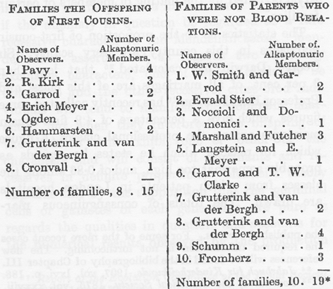
左表：いとこ同士結婚で生まれた子供たちの家族（観察者氏名：アルカプトン尿者の数）。
右表：両親間に血縁関係が無い家族（観察者氏名・アルカプトン尿者の数）。
（＊本論文で家族（family）とは両親を含まない。＝sibling）
右表：両親間に血縁関係が無い家族（観察者氏名・アルカプトン尿者の数）。
（＊本論文で家族（family）とは両親を含まない。＝sibling）
表が示すように18の家族（＊両親を除いて子供たち）のうちで８家族はいとこ結婚の子供たちであり10家族は血族関係が無い両親の子供たちであり、全体で34病例のうちで15病例は最初のグループに属する。正常の両親から何人かの異常の子供が生まれることと両親の血属関係のあいだには密接な関係のあるようであり、最近の報告でFeer（20）がこの関係を強調している。両親がある１つの血液であることにより「新しく」子供たちに異常の起きたという単純な事実を考える人は今では居らず、両方の両親が伝播することになる隠れた性質の出現は、ある家族のメンバーの交合によることは明らかである。
この国におけるいとこ結婚の割合についての統計は非常に貧弱である。George Darwin 卿（25）（ダーウィンの息子）はすべての結婚の３%以下がこの種のものであると計算し、最近 Karl Pearson 教授（26）は専門家階級でいとこ結婚が4.9%とする数値を集めているがいろいろな理由で多分あるていど高いだろうとみなし、ロンドンの病院の患者からの階級では0.86であるとしている。２つの階級におけるすべての程度の血族結婚はそれぞれ7.76%および1.3%であった。したがってでアルカプトン尿症の子供たちの両親におけるこのような結婚の割合は全く異常（＊高い）なことは明らかである。他方、このような結婚による子供たちにおけるアルカプトン尿症の割合は実際に非常に低いことになる。ヨーロッパとアメリカにおけるアルカプトン尿症者は50から60人に過ぎないが、いとこ結婚でできた子供たちはロンドンだけでもたぶん数千人になるだろう。Bateson（27）が指摘し最近には Punuett（28）が強調したようにアルカプトン尿症の出現様式はここで問題になっている異常がメンデルの意味における稀な劣性形質とみなすならば容易に説明することができる。メンデル法則は２つの相互に排他的な形質について、そのうちで１つは優性で他方は劣性であると主張していて、交配した個体（雑種）は優性の形質を示す傾向をもつが、雑種の子供たちを交配するとどちらかの形質を示し、優性と劣性が一定の割合になるであろう。メンデルの理論は各世代の性細胞すなわち配偶子が問題にしている性質に関して純粋であり、優性の配偶子と劣性の配偶子が同数づつ作られる結果が観察されると仮定して、このことを説明している。２つの雑種からの次世代のうち、４分の１は２個の優性配偶子の結合により作られ同じ配偶子だけを作るであろう。他の４分の１は劣性配偶子の結合によって作られ劣性の配偶子だけを作るであろう。残りの半分はそれ自身は優性の形質を示すが両親と同じように雑種であり優性の配偶子と劣性の配偶子の両方を作るであろう。２個の劣性の配偶子が受精において出会ったときだけにその結果の個体は劣性の形質を示す。
もしも劣性形質が稀なものであるとこのような２つの配偶子が結合する前に数多くの世代を経なければならないであろう。なぜかと言うと劣性の配偶子を作る家族は数が少なく両親が２人ともこのような配偶子を作るような結婚をする機会は非常に小さい筈だからである。しかしこのような家族の２人が相互に結婚する（＊血族結婚）と機会は増加しこのような結婚による子供たちのうちのあるものは異常を示すであろう。異常が稀であればあるだけ血族結婚の影響は顕著なはずである。もしも劣性形質の個人が両方（＊優性と劣性）の配偶子を作る見掛け上は優性の者と交配すると、かなりの割合の子供が劣性形質を持つことになり、片親が劣性でもう１人は見掛け上は正常な両親の劣性の子供に会うことになる。このような片親がアルカプトン尿症でない両親から子供にアルカプトン尿症が直接に遺伝する２例が知られている。そのうちの１つは Osler（29）が観察した例である。兄弟もまた異常であるアルカプトン尿症の父親の息子もまたアルカプトン尿症であった。第２例は Orsi（30）が記録したもので、母親、息子、娘のすべてがアルカプトン尿症であった（31）。最後に劣性者が劣性者と交配したらすべての子供は劣性形質を示す筈であうが、アルカプトン尿者同士の結婚の起きた例は知られていない。しかしマウスのように子孫が多い動物の場合には子供たちのあいだの優性者と劣性者の割合を知ることができるが、子供がずっと少ない人間の偶然の交配の結果はあまり典型的ではない。
実際のところ、ヒトの形質については優性の子供と劣性の子供の比率はメンデル法則が要求するものから大きく離れることがあり、誤った資料数がこのような結果をダメにする傾向のあることを認めざるを得ない。経験によると患者の家族について正常かそうでないかについての情報は信用できないことが多く、とくに化学的な異常については特にそうである。中年の個人は子供のときに死んだ兄弟や姉妹について殆ど知らない。流産を考慮しなければならないし、ここでも提供される数は不完全な家族と関係し、その後の誕生によって大きく修正されることがある。上のような理由でアルカプトン尿症について得られる数値は重視できないが、次の表は価値がある18家族についてのものである。
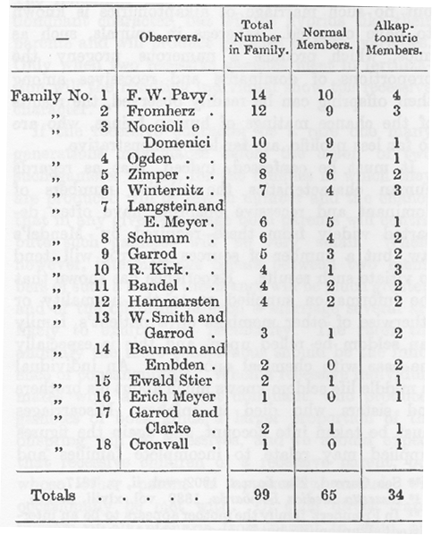
（家族番号：観察者氏名：家族の総人数：家族内アルカプトン症者の数）
（＊本論文で家族（family）とは両親を含まない。＝sibling）
（＊本論文で家族（family）とは両親を含まない。＝sibling）
計で正常メンバーは大きく優勢ではあるが、メンデルの法則が要求するものに近づいてはいない。この法則によると劣性形質は子供の４分の１でなければならない。アルカプトン尿者は34ではなく24または25でなければならない。この数値はメンデルにフェアでないことは明らかである。我々の注意を大きな家族に限ることを予期する人があるだろうし、５人またはそれ以上の子供がいる１番目から９番目の家族で計はメンデル法則に完全に従うようになる。すなわち76：57：19で比は４：３：１である。しかし家族（子供）が５人またはそれ以上に線を引くのは全く根拠がない操作である。Baumann と Embden の患者たちは私生児の兄弟・姉妹であるがこの結合による唯一の子供たちであるかどうか記録は明らかではない。両親は別れてそれぞれが子供を持ったが１人もアルカプトン尿症ではなかった。記録にある３組のアルカプトン尿者たちは双生児であった。１例では双生児の２番目は間違いなく、他の２例ではたぶん正常であった（32）。どの例でも双生児のうち正常な子供は死亡しアルカプトン尿者が育った。双生児たちは２例では同性であった。
アルカプトン尿症がメンデル法則の劣性形質であるというこの見解を決定的なものとすることができる最強の議論は、ヒトにおける発現の様式が極めて似ている白皮症が、動物の実験的繁殖において劣性形質である事実（33）によって与えられると私は考える。ヒトの家族における白皮症メンバーの割合について Bateson（34）が引用している数値は、アルカプトン尿症家族として上に引用した数値以上にメンデル法則の要求に厳密には即してはいない。
ペントース尿症が兄弟、姉妹に起きる事実が多く得られているが、両親から子供への伝達の例は記録されていない。この異常がある人物の両親に血縁関係があるかどうか知られていない。ユダヤ人に特に起きる事実はあるていど得られている。
シスチン尿症の遺伝について得られる事実はアルカプトン尿症に関するものよりもずっと少ない。これは異常の性質がより明らかでないことによるもので、シスチン尿症のメンバーと正常のメンバーの数を確実にするには、その家族の全員の尿を注意深く検査しなければならないからである。シスチン尿症者は必ずしも結石ができるとは限らないし、あるときには尿に結晶がたまっていないし、家族の他のメンバーについての両親の言うことはこの点では価値が無く、結石の幾つかの例についての歴史だけが示唆に富んでいる。得られる情報は両親から子供への直接な伝達は他の代謝異常より多く、シスチン尿症は続けて３代にわたり確実に追跡されている。たとえば Abderhalden が研究した家族では父系の祖父と父親がシスチン尿症であるのに母親は正常であった。５人の子供のうち１人は栄養失調の症状で21ヶ月に死亡しシスチンは組織に沈積していた。他の２人も同じ症状でそれぞれ９ヶ月と17ヶ月で死亡したが、シスチンを排泄したかどうか判らない。生存している子供はそれぞれ４才半および半年であり、２人ともシスチン尿症であった。ここで示したような多数の割合のシスチン尿症の子供たちは他の家族にも見られた。Cohn（36）が記載した家族ではシスチン尿症の母親と正常な父親に12人の子供がいた。彼らのうちの２人の尿は得られなかったが残り10人のうちで７人以上がシスチンを排泄した。さらに Pfeiffer（37）は正常の両親の４人の子供について記録している。父親の言うところで彼らはいとこ同士であり、子供たちはすべてシスチン尿症者であった。患者である１人の娘の２人の子供たちは正常であった。私が知ることのできた他の家族で６人の子供のうち２人がシスチン尿症であった。両親は異母［父］兄弟の子供同士であった。直接遺伝の頻度が高く子供たちの割合が大きいことは、もしもシスチン尿症がメンデル法則に従って伝達されるなら劣性形質であるよりは優勢形質なのであろう。
これまで我々はこれらの先天性代謝異常をひとまとめにし、それらに共通な点、およびそれらが奇形のうちで異なるグループを形成していると見なす理由、を考えてきた。しかしそれぞれは興味深い独自の特徴を持っていて、正常な人体において働いている化学過程の研究に光をあてる意味においても、詳細に考慮する充分な価値が存在する。
第２章 白皮症（省略）
第３章 アルカプトン尿症
先天性代謝異常のうちでアルカプトン尿症は我々のもっともよく知っているものであり、これの研究によって多くのことを学んだものである。それ自身としてはささいなものであり、有害と言うよりは不便なものであって、幼児は衣服を染め成人は生命保険に入り損ねるだけである。医師はそれの存在することに気が付き、それを認識する方法を知っていて、重篤な傷害と間違いさえしなければ良い。しかし化学生理学者や化学病理学者にとって、アルカプトン尿症は代謝異常においてもっとも興味深いものである。アルカプトン尿症の研究は食物および組織のタンパク質の芳香族アミノ酸の代謝における運命に光を当てるだけでなく、もっと広い意味の運命、すなわちタンパク質のすべてのアミノ酸または関係あるグループのずっと広い意味をもつ事実を明らかにするのを実際的に助けてきた。
アルカプトン尿症者の排泄したばかりの尿は色に異常はないが、空気に触れると暗色になる。暗色化は酸素吸収と関係し、液体の自由表面に始まり、褐色から種々の色合いを通って真の黒まで達する。反応がアルカリ性であると変化は急速になる。リネンや毛織物は尿で湿ると写真現像液で湿ったように染まる。尿をFehling液（＊尿糖の検査試薬）と熱する深い褐色になり大量の還元が起きるが、液体が褐色になりオレンジ色の沈殿が浮遊しているのでこの検査は全く特別な外観を呈し、１度でも見たことのある人は誰でもすぐに気がつく（＊糖と違う）。硝酸銀のアンモニア性溶液は低温でも急速に還元される（＊銀鏡反応）。尿を Nylander 液（＊尿糖の検査試薬）と熱すると試薬のアルカリ性によって暗色化は起きるがビスマスの還元は見られない。Millon 試薬によって黄色の沈殿（＊フェノールの反応）は起きる（＊糖と違う）。最も顕著な反応は塩化第一鉄の希薄溶液を１滴づつ尿に垂らしたときに見られる。各滴に続いて深青色は出現するが一瞬しか続かず、酸化が終わるまで繰り返すことができる。酵母を加えても発酵は起きず、偏光は右にも左にも回転しない（＊糖と違う）。
アルカプトン尿症についての知識は1858年に始まる。この年に 〔Boedeker〕（１）は糖尿のある患者の尿に糖でない第２の還元物質のあることをみつけた。彼はこの物質のアルカリにたいする性質からアラビア語のアルカリとギリシャ語のカプテイン（掴まえる：英語の Capture？）の２カ国語からなるアルカプトンの名前をつけた。しかしこの異常はもっと昔から医学文献に見られるようである。たとえば Alexander Marcet（２）が1823に記載した黒い尿を排泄する子供の例はこれであろう。Marcet は尿の還元性について何も知らなかったようであるが、置いておくと暗色になること、お襁褓が染まること、およびアルカリを加えたときの効果を正確に記載している。そしてこの病態はこの子が生まれた直後からあったことを述べている。排泄されたとき黒い尿と空気に触れたときに暗色になる尿とのあいだの違いは19世紀の初期まで医学文献で区別されなかったが、16世紀および17世紀に書かれている病例、たとえば1584年に G. A. Scribonius（３）が述べている健康ではあったが常に黒い尿を排泄していた小学生や1609年に Schenck（４）が引用している一生のあいだ上と同じような異常を示した僧侶の例などはアルカプトン尿症以外の診断を下すことは困難である。このような記録のうちでもっとも興味深いものは1649年に刊行された Zacutus Lusitanus（６）の仕事の中に見られる。患者は黒い尿を出す少年であって、14才のときに内臓の火の熱を抑えるために激しい治療を受けた。この熱は彼の胆汁を焦がして黒くしていると考えられていた。治療法としては、放血、下剤投与、沐浴、冷たい食事と熱い食事、大量の薬、などが処方された。これらのどれもはっきりとした効果を示さず、患者は無駄で余計な治療に疲れて自然の経過に任せる決心をした。予言された悪いことは何も起きずに彼は結婚して大きい家族を作りいつでもインキのように黒い尿を排泄しながら長い健康な生涯を送った。
アルカプトン尿症が非常に稀な異常であることは確かであり、経験の深い多くの医師でもこれに出会うことが無い。１家族で何人かに起きること、およびその起き方について、私はすでに充分に詳しく話してきた。非常に多くの場合で生まれたときから存在し生涯のあいだ続くが、しかし非常に少ない稀な例として一時的に病気の症状として出現することもあると言われている。時に過度の排尿の起きる排尿障碍が見られる他には症状は無いが、ある少数のアルカプトン尿者で年をとると組織が異常に染まることがある。これは Virchow（６）が最初に記載して組織黒変症（オクロノーシス）と命名したものである。
オクロノーシスの本質的な特性は軟骨構造がインキのような黒さに染まることであり、皮膚表面または皮下に色素の存在することがあり、生きている人でこの病態を認めることがある。耳軟骨の黒くなった色が皮膚を通して見えて耳の穴が濃青灰色になったり結膜の上や顔の皮膚にまで黒い斑が現れたり指関節が青っぽい色になったりする。20より少ないオクロノーシスの例が記録されていて、この病態は稀ではあるがはっきりとした原因が幾つか与えらられている。Albrecht（７）はアルカプトン尿症が原因の１つであると最初に示唆し、Osler（８）は間違いなくアルカプトン尿症であるとされている３人の老男子で表面の色素沈着の発展および特有な分布と性質について記載した。最近になり Clemens（９）、A. Wagner（10）、Gross および Allard と Landois（11）はここで論じている尿の異常がある人たちの身体の軟骨にオクロノーシスの色素がつく決定的な証明を与えた。オクロノーシスの記録のうちの４例において色素沈着は長い年のあいだ脚の潰瘍に石炭酸を使用したためのようである（12）。残りの例のあるもので尿は異常な色をしていないか、またはもしもあるとしても報告に記載されていないで、他の例で暗色の尿の排泄がみられたがアルカプトン尿または石炭酸尿とは違っているようであった（13）Gross、Allard と Landois が記載した例ではアルカプトン尿症またはオクロノーシスと関係あると報告者がみなした関節の変化があり、別の患者ではまた進行性の関節疾患の徴候が見られた。このような変化はオスラーの症例でも観察され、またオクロノーシスの外見は無かったがバーゼルの患者にも存在した。
アルカプトン尿症はオクロノーシスの原因の１つであり、石炭酸を長いあいだ吸収するのはもう１つの原因であることは入手できる事実から疑いは無いが、すべてのアルカプトン尿者のすべては年をとるとオクロノーシスにになるわけではないし、〔Fuerbringer〕（14）と Moraczewski（15）は病理解剖の記録に軟骨の染まっていることは何も書いていないし、もしもあったら見落とすとは思われない。生前の例では組織内で酸化と黒化が起きるかをまだ説明することはできないが、Gross と Allard は水酸化ナトリウムでほとんど中和したホモゲンチジン酸の無色の溶液に軟骨を浸すことによって黒化させることに成功した。軟骨についていた線維組織が染まらなかったことは軟骨構造が選択的に染まることを示している。
〔Boedeker〕 が彼の患者の尿から分離しアルカプトンと名付けた物質は窒素を含んでおり明らかに不純なものであった。後になって異常成分はピロカテキン（＊１，２−ジヒドロキシベンゼン）（16）および他の種類のプロトカテク酸（＊３，４−ジヒドロ安息香酸）（17）と考えられると報告された。Marshall（18）は彼の患者の尿から彼がグリコズール酸と呼んだものを手にいれ、R. Kirk（19）は炭素と水素の割合が化学式 C9H10O5 に近いものを得てウロロイシン酸と名付けた。Marshall と Kirk の２人の研究者は問題になっている異常物質の実際の性質と組成を認識するのに非常に近づいていた。これらの初期の例で見つかった還元性物質はまったく最近のものと違うといういう充分な根拠が無く、尿またはそれから抽出されていた物質を再検査するとホモゲンチジン酸のあることがその後になって示された。
ホモゲンチジン酸の排泄はアルカプトン尿症で本質的な特徴であり、これは Wolkow と Baumann（20）により単離、分析、および完全に研究され1891年に古典的な論文において発表された。Marshall と Kirk の研究の数年後のことであった。経験式は C8H8O4 であることが示された。この研究者の発見は Huppert （21）により確認され、３つの違う合成方法でそれぞれ Baumann と Fr
 nkel（22）、Osborne（23）、Otto Neubauer と Flatow（24）によってパラ−ジオキシ−ベンゼン酢酸（ヒドロキノン−酢酸）であることが確実に証明された。
nkel（22）、Osborne（23）、Otto Neubauer と Flatow（24）によってパラ−ジオキシ−ベンゼン酢酸（ヒドロキノン−酢酸）であることが確実に証明された。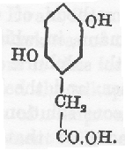
ホモゲンチジン酸はもともと鉛塩として単離されたが Wolkow と Baumann の方法よりもっと簡単な方法（25）で得られるようになった。尿を沸騰に近い温度まで熱して、尿100ccあたり５グラムの固体の中性酢酸鉛を加える。生成した濃密な沈殿を液体がまだ熱いうちに濾別し透明な黄色い濾液を冷たい場所に置く。しばらくするとホモゲンチジン酸の鉛塩が結晶として析出し24時間後に結晶を濾別し洗い乾かす。粉にした鉛塩をエーテルに浮遊させて硫化水素を通すと遊離の酸を得ることができる。濾過によって硫化鉛を除いた溶液を蒸発させると無色のホモゲンチジン酸結晶が残り、この融点は146℃から147℃である。
別の抽出法として尿を濃縮し硫酸で酸性にしてエーテルで繰り返して抽出しエーテル抽出の残渣の水溶液から鉛塩を沈殿させる Wolkow と Baumann の方法またはホモゲンチジン酸エチルを得る Erich Meyer（26）の方法を採用することができる。
尿中のホモゲンチジン酸を定量するためには Baumaun（27）の容量分析法が使われる。このどちらかと言うと面倒な方法はアンモニアの存在のもとで硝酸銀の10分の１規定溶液の還元に基づくものであったが、決定された５分間（28）に完全な還元を起こさせるには Baumann 原法の３パーセントより濃度が高い８パーセントのアンモニアを使う必要があった。
ホモゲンチジン酸溶液はアルカプトン尿に特有なすべての反応を呈し、空気にさらすと暗色になりアルカリを加えるともっと促進され、沸騰させるとフェーリング溶液を還元し、低温でアンモニア性硝酸銀を還元し、第一塩化鉄によって一時的に紺色を呈した。Abderhalden と Falta（29）はアルカプトン尿者の血液からホモゲンチジン酸の存在を確定し血清からこの鉛塩を得ていた。大便中には確かに存在せず私は汗の中に見つけることができなかった。Ewald Stier（30）および Bandel（31）は彼らの患者の耳垢が異常に黒いことを記載し、前者はアルカプトン反応を呈する物質を得た。
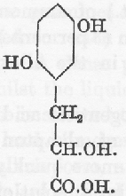
アルカプトン尿についての近年の記載のすべての中には、ある場合に尿中にホモゲンチジン酸の他に似た性質を持った第２の酸――すなわちウロロイシン酸が存在し、これは多分ヒドロキノン−α−乳酸であろうとの言明が見出されるであろう。
この言明は誤解に基礎を置いていて誤りであろうと私は信じていて、このように信ずる根拠は Hurtley 博士（３）と一緒に書いた最近の論文で充分に述べてきた。
ウロロイシン酸という名称はホモゲンチジン酸が知られる前に Kirk が彼の患者の尿から単離した物質につけたものであることを思い出すであろう。故 Kirk 博士がこれを第２のはっきりとしたアルカプトン（＊酸を省略する）であると主張したことはなかった。実際に私への手紙で彼のウロロイシン酸は不純なホモゲンチジン酸に過ぎないと書いていた。Kirk は分析によって彼の物質の化学式は C9H10O5 であり融点が133.3℃であるとしていた。ところが先にも述べたようにホモゲンチジン酸の融点は146℃から147℃である。分析値は上の化学式に相当し溶液を石油エーテル層の下においてアルカリで滴定すると上の構造を持った単塩基酸に相当する分子量を示した。しかし、Kirk の後になってからの憶測が誤りであると疑うことはできず、これらの一致があるにもかかわらず彼が分析したあの物質は不純なホモゲンチジン酸であった。このようにして第２の酸を求めて成功しなかったアルカプトン尿に Kirk の抽出方法を利用したところ彼が記載した通りの鉛塩が得られたが、鉛塩から単離した遊離酸の融点は134℃から136℃であったが検査すると主としてホモゲンチジン酸からなることが示された。Kirk が検査した尿はこの酸を含むものであると考えられている。Huppert はホモゲンチジン酸を元来のKirk の物質のあるものから得ていたし、我々もまた年がたって黒くなった「ウロロイシン酸」のラベルがついた別の資料にホモゲンチジン酸を見出した。さらに1902年には Kirk 博士の親切な計らいによって彼の患者の尿の新鮮な資料から大量のホモゲンチジン酸を得ることができたが第２のアルカプトンの存在する証拠はまったく無かった。
Kirk のウロロイシン酸がはっきりした物質であるという考えは故 Huppert 教授（33）が1897年に彼の所に送られてきた元来の物質に行った研究に由来していた。それに含まれるホモゲンチジン酸を出来るだけ分離すると融点が130.5℃の残渣が得られ、Huppert はこの残渣をウロロイシン酸とみなした。さらに検査を進めてこれはヒドロキノンの誘導体であり、多分 Kirk がウロロイシン酸とした化学式 C9H10O5 を持つ酸のヒドロキノン−α−乳酸であろうとの結論に彼は達した。
Huppert 教授の結果が正確なことに問題は無いが、彼の使うことが出来た物質の量は少なくて融点が低い分画の新たな分析をすることができなかったのは事実である。そして私は信じているが、Kirk の研究についての記述と送った資料についての Huppert の記載とを注意深く比較して、その資料を個人的に検査して、その資料が Huppert の思ったように不純なものではなく Kirk が分析したウロロイシン酸であるとして個人的に検査したら、その資料全体の分析の結果を低融点分画に当てはめられないことは明らかである。ヒドロキノン−α−乳酸の合成に成功した Otto Neubauer と Flatow（34）は合成した試料がウロロイシン酸と思われるものと融点その他において違うことを示した。Langstein と E. Meyer（35）が彼らの患者から得た量は少ないが融点だけは測定できた融点133℃の残渣を除いて、その後になって記載されたどのアルカプトン尿にもウロロイシンが存在する徴候の無い事は意味深い事実である。従ってアルカプトン尿のあるものに第２の異常な酸（ウロロイシン酸）が存在する充分な事実の無いという結論が確認されたようであり、この結論は単純化の利点がある。アルカプトン尿者の尿はホモゲンチジン酸が存在する以外には正常者の尿と明らかな違いは無い。初期の研究者たちは尿酸の排泄が顕著に減少していると記載しているが最近の研究はこのことを確認することはできていない。多数の症例において尿酸の排泄は平均以下ではなく褐色色素で染まった尿酸結晶がしばしばその尿から析出していた。従って我々は人体において出発物質についての考察およびホモゲンチジン酸の起源の様式にのみ限定して注目すれば良いことになるだろう。
動物体でベンゼン環合成の起きたことが無い事実を見て、Wolkow と Baumann は食物および組織のタンパク質およびそれの含む芳香族アミノ酸、すなわちチロシンとフェニルアラニンがアルカプトンの最も可能性のある特異的な前駆体であろうと考えた。この考察はアルカプトン尿者にチロシンを経口的に与えた結果から正しいことが示された。このような摂取は非常に顕著なホモゲンチジン酸排泄の増加を起こした。それ以後にこの観察は他の研究者たちによって繰り返され、アルカプトン尿者で一般に成立することが示された。同じような増加はタンパク質性の食物、とくに芳香族アミノ酸が豊富なタンパク質の摂取によって起きる。
Wolkow と Baumann はフェニルアラニンを摂取したときの効果を試すことはできなかったが、後に Langstein と Meyer（36）は彼らのアルカプトン尿者において分解されたタンパク質のチロシンは、彼が排泄するアルカプトンの量に及ばないという結論に達した。この結論は毎日のホモゲンチジン酸排泄量と窒素排泄量の推定値を比較することに基づいていて、後者は体内におけるタンパク質分解量を示している。フェニルアラニンもまたホモゲンチジン酸の起源であると考えられ、このことは後に Falta と Langstein（37）によって示された。彼らはフェニルアラニンの経口摂取によってホモゲンチジン酸の排泄がチロシンの場合と同じように増加することを見出した。
Falta（38）は後になって一定の食餌に種々のタンパク質を加える長期にわたる給食実験で、摂取したタンパク質のフェニルアラニンおよびチロシンの含量に比例してアルカプトンの排泄が変化することを示し、どのような食餌にしてもアルカプトンの排泄は、異化されたタンパク質の芳香族アミノ酸が完全にホモゲンチジン酸に変化して排泄されたとして期待されるものに近いという結論に達した。
チロシンまたはフェニルアラニンを摂取したときに得られるアルカプトンの量は摂取方法によって異なり、大量を１度に与えずに少量を短かい間隔で与えると排泄量はほとんど定量的である。この観察は Mittelbach（39）によるものである。
他に１つの知られているタンパク質内アミノ酸はベンゼン環を分子内に持っているが、トリプトファン内で環状構造はもっと複雑な複素環のインドールの一部である。トリプトファンの異化がチロシンと同じ経路を通りホモゲンチジン酸に転化されることは「ア・プリオリ」にありそうもないが、この点を試すために私はアルカプトン尿症の少年に１グラムのトリプトファンを摂取させた。この物質は F. G. Hopkins 博士が親切にも提供してくれたものである。
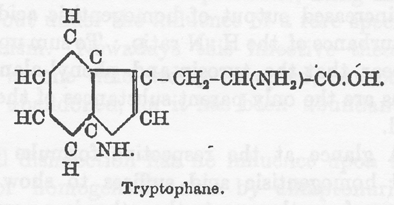
この分量は非常に少なくその効果はあるとしても少ないことが期待される。従って患者の食事を一定にしておいて、同量のチロシン（0.9グラム）を２回コントロールとして与えた。それぞれのチロシン投与について、ホモゲンチジン酸：窒素の比率（＊H：N比率）をはっきりと記録したが、トリプトファンを与えた日にこの比率の変化は見られなかった。従ってトリプトファン経口投与はホモゲンチジン酸排泄を増やさないと結論するのが正しいと感じた。しかしこの点が完全に確立するにはもっと大量に使って確認することが必要である。さらに Hopkins 博士は親切にもトリプトファン摂取の日の尿を調べて下さったが、トリプトファン異化の異常によると考えられる異常構成物質の存在は認められなかったことを付け加えることができる。トリプトファンが代謝においてホモゲンチジン酸を与えないことは今では Otto Neubauer（40）によって確実に証明されている。彼は成人のアルカプトン尿者に５グラムのトリプトファンを与えた。この投与量はホモゲンチジン酸の増加を示さなかったし、H：N比率に何らの変調も起こさなかった。結論として、タンパク質のチロシンとフェニルアラニンだけがアルカプトンの母物質のようである。
チロシンおよびホモゲンチジン酸のそれぞれの構造式を見ると、その変化は複雑であることが判る。すなわち側鎖にたいしてパラの位置の水酸基を除去し２と５の位置に置換を起こすか、または側鎖そのものの転移であるかも知れない。
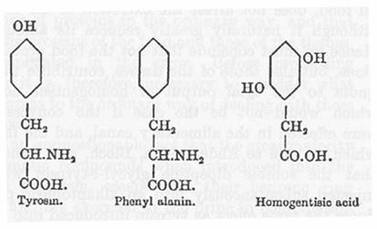
このような変化は Baumann が書いたときには現在にくらべて化学的な困難があり、動物の代謝に並行するものがなかった。しかしこのような次々と続く還元と酸化は細菌活動によって行われることが知られたので Wolkow と Baumann はアルカプトン尿者の腸管がその場であり、稀にある特殊な細菌によって行われることを示唆した。この感染説は一時は広く受け入れられていたが、これはひろく否定されたので完全に見捨てられた。
腸管消毒はアルカプトン尿者のホモゲンチジン酸排泄に影響が無かったし、彼らの大便から培養したどのような微生物もチロシンにこのような変化を起こすことはできなかった。さらに Mittelbach（41）、後には Langstein と Meyer、および Falta（42）は、タンパク質の食物またはすべての食物の摂取を取りやめると、もちろん量は大きく減少するがホモゲンチジン酸の排泄が停止しないことを示した。従って食物タンパク質だけでなく組織のタンパク質もホモゲンチジン酸排泄量に関係すると結論しなければならず、もしもこの転換が腸管で起きるとしたら、このようなことが起きる筈はない。そして Abderhalden、Bloch および Rona（43）が可溶性ジペプチドのグリシル−１−チロシンをアルカプトン尿者へ皮下注射するとチロシンを消化管内に入れたときと同じ結果の得られることを示したのは、この変化が単なる腸管細菌の作用によるものでないことの決定的な事実である。
最後に、もしもタンパク質の芳香族アミノ酸は吸収される前に腸管内で変化するとしたらそれらが動物体内で合成されないことから見ると、もしもこのような正常からの逸脱があっても実際に生命が維持されるとしたら、アルカプトン尿者の組織タンパク質はチロシンおよびフェニルアラニンの不足を起こすであろう。Abderhalden と Falta（44）はアルカプトン尿者の血液タンパク質および髪の毛と爪を研究して問題になっているアミノ酸が不足している事実を見いだせなかった。
これまでに述べたすべてのことからアルカプトン尿の背後にある代謝異常はタンパク質の芳香族アミノ酸一般に関するものであり、食物のタンパク質も組織のタンパク質もこの異常に関連している。従って更に先に進む前に一般にこれらのアミノ酸について知られていることを考える必要がある。
芳香族の物質の多くは人体に入るとベンゼン環は分解しないで硫酸と結合して芳香族の硫酸エステル、またはグリシンと結合して馬尿酸グループ、として尿中に排泄される。チロシンとフェニルアラニンは身体にとって異物ではなくタンパク質の需要な構成物質であり、これらアミノ酸の芳香族環は完全に分解されるのでふつうの芳香族とは違っている。しかしこの二物質はこの点で独特ではないし、そうであることは期待されない。これらの異化における中間産物は明らかに同じように分解されるであろうし、分子構造が密接に関係する物質もまた運命を共有し同じ分解の影響にさらされるであろう。最近の研究のあるものはこのような物質が分解される場所および受ける変化の本性について手掛かりを提供している。たとえば G. Embden、Saloman、および F. Schmidt（45）はタンパク質物質（アミノ酸）のあるもので肝臓を還流するとアセトンの生成することを観察した。グリシン、アラニン、グルタミン酸、アスパラギンではこのようなアセトン生成が見られなかったが、ロイシン、チロシン、フェニルアラニンおよびフェニル−α−乳酸およびホモゲンチジン酸ではかなりの量のアセトンが得られた。このリストの芳香族酸はすべて正常の生物によって分解されるが、そのように分解されないフェニル−β−乳酸、フェニル−プロピオン酸、およびフェニル−酢酸は還流した肝臓でアセトンを生成しなかった。さらに J.Baer と L.Blum（46）は上のアセトン生成物質のリストにある物質は糖尿病患者に与えるとβ−オキシ酪酸の排泄を増加させることを見つけた。従って彼らはアセトン生成は二次的な事柄であってβ−オキシ酪酸が最初に作られるのであろうと考えた。
次に考察を要求されるのはアルカプトン尿においてチロシンおよびフェニルアラニン処理の不全が完全であるか不完全であるかの問題である。糖尿病におけるグルコースの燃焼不全にはいろいろな程度のものがあり、炭水化物の多い食事をとった時にだけ少量のグルコース排泄の見られるのからグルコースを尿に排泄するためにタンパク質を要求する殆ど完全な燃焼不全まで存在する。一時的な例についてこの点で情報は得られていないが、ともかく生まれつきのアルカプトン尿の例ではホモゲンチジン酸の排泄は摂る食事によって当然のことであるがかなり変化する。しかし食事の種類や割合が似ているならば症例が違ってもかなり一定である（47）。アルカプトンが尿中に微量に存在する事実は存在しない。毎日に数グラムの排泄を観察するか全く見つからないかである。ふつうの混合食事では１日に４〜５グラムが平均である。ホモゲンチジン酸と窒素の比率から得られる事実は毎日のホモゲンチジン酸排泄だけから得られる事実よりもこの点で大きな価値がある。食物中のあるタンパク質を増やしただけではこの比率は変化しない。何故かと言うとタンパク質の分解に伴って尿中の窒素とアルカプトンは同じ進度で増加するからである。しかし食物中のタンパク質の量が変化しても比率に影響は無いものの、摂取タンパク質の質が変化すると、あるタンパク質は他よりもチロシンとフェニルアラニンがずっと多いのに窒素の収量は比較的に一定であることから見て当然なことであるが、比率は大きく影響される。したがって芳香族アミノ酸が少ししかない卵アルブミンを芳香族アミノ酸の多いカゼインによって置き換えると、窒素の排出にくらべてホモゲンチジン酸が大きく増えるであろうことは、Langsteinと Meyer および Falta が示した。
もしもアルカプトン尿症で異常が完全であり最高であったら、この異常をもつ人たちのすべては標準食を与えられると同じ量のホモゲンチジン酸を排泄し、摂取する量の変化によってホモゲンチジン酸の全排泄量が顕著に変化するとしても、ホモゲンチジン酸：窒素の比率は影響されないであろう。この点で決定的な事実を得るためには何人かのアルカプトン尿者に標準食を与えてタンパク質が同じであるだけでなく幾つかのタンパク質が一定の割合であるようにすることが必要であろう。このような条件は牛乳だけの食事によって最良に満足されるであろう。不幸にしてこのような観察を得ることはできなかったが、次に示す観察はすべての例において機能不全は１段階しか無く、チロシンとフェニルアラニンに作用する機能の不全は完全なものであることを示唆している。最良の標準は一定と言うにはほど遠い混合食であり（48）（＊下の表に）引用した数値は Langstein と Meyer および Falta が１人のアルカプトン尿者、Schumm が他の１人、Hele と私が他の３人で行った観察である。すべての患者は数値の得られたときまで混合食を摂取していて、この結果はほぼ一定の食事条件で比率は少なくとも驚くべく似ていることを示している（49）。
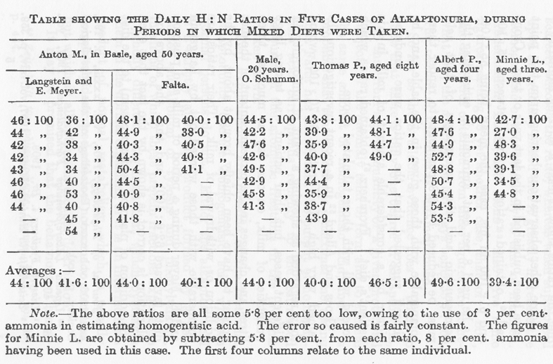
表は混合食摂取時における５人のアルカプトン尿者の毎日のH：N比を示す。
カラムは左から、バーゼルにおける50才の Anton M.（Langstein と Meyer および Falta の観察）：20才の男子（O. Schumm の観察）：８才の Thomas P.：４才の Albert P.：３才の Minnie L. の数値である。
脚注 上記の比はすべて5.8％ほど低すぎる。ホモゲンチジン酸測定に３%のアンモニアを使ったためである。この原因による誤差はかなり一定である。８%のアンモニアを使ったので Minnie L. の数値はそれぞれの比から5.8%を減じている。最初の４カラムは同一人についての数値である。
この点に関係する他の観察は昨年および一昨年に刊行された。Cronvall（50）は彼の例で45：100と61：100の比率が得られ平均は55：100であった。彼はホモゲンチジン酸の測定に８％のアンモニアを使ったので表の数値に対応させるのにこの酸の比率から5.8パーセントを減じなければならないし、患者の食事にかなりの量のミルクが含まれることによってこの比率はかなり高めであることを彼自身が示唆した。Fromherz（51）は上の表によく適合する比率を得た。
Gross と Allard（52）は最近の研究で非常に高いH：N比率の60-70：100を得ていて、彼らはこれを症例によって均一性の無いことを示すものとしたが、彼らの患者は１日に３リットルもの大量のミルクを飲んでいて、食事のタンパク質の量の変化は主としてミルクの増減によっているようである。彼らの比率はミルクとプラスモンの食事をとっていたときの Langstein と E.Meyer による比率（平均は62.6：100）に近いものであって、上に述べた説明が正しいことは食事にプラスモン（ナトリウム・カゼイン）を加えても比率にほとんど影響しないが、ふつうの混合食に加えると窒素排泄にくらべてホモゲンチジン酸排泄が大きく増加することによって示される。Abderhalden、Bloch、および Rona（53）もまたさらに少年の他の例について数値を与えていて、これらの数値から得られた比率はある程度低く５日間の平均は35.7：100であった。この食事の性質は示されていない。
現在のところ得られている事実から、アルカプトン尿には１つの段階しか存在せず、あるタンパク質のある量でこの異常者のすべては同量のホモゲンチジン酸を排泄し、この量は最大量であると思われることが示されている。ホモゲンチジン酸の排泄量が分解されたタンパク質の芳香族アミノ酸の推定量にほぼ対応することを Falta が示しているのでこのことが言える。
アルカプトン尿者はホモゲンチジン酸を排泄し正常人は排泄しない事実に２つの説明が可能である。アルカプトンはチロシンおよびフェニルアラニンの代謝異常による全く異常な産物でありこれらのアミノ酸はそのために正常人で起きているのと全く違った運命を受けるとするか、またはこれは正常代謝の中間代謝物であってふつう完全に分解されて排泄されないがアルカプトン尿症では分解を受けないとするか、どちらかである。
ホモゲンチジン酸は生体において邪魔者ではなく正常産物であることが必要である。どのような化学的防御もアルカプトン尿症において邪魔しないように、代謝で分解されないどのような酸にでも起きるものを除いて作用しない。ホモゲンチジン酸は塩基と単純に結合するだけで、芳香族硫酸エステルを生成することもグリシンと結合して排泄されることもない。ホモゲンチジン酸の次のもののゲンチジン酸はこれに反して、身体を通るあいだに分解され、Likhatscheff（54）が示し Neubauer と Falta（55）もまた見出したように一部分は芳香族硫酸エステルとして排泄される。
酸としてホモゲンチジン酸の一部はアンモニアと結合するが酸にたいするこの防御は決して選択的なものではない。Erich Meyer（56）はアルカプトン尿症の子供でアンモニア排泄増加の事実を得て、Schumm（57）は大人で同じような観察を行った。どちらの例でも尿アンモニアの増加は重症糖尿病のような病的条件で見られるほどのものでなかった。我々が見たようにこの酸排泄は幾つかの病的状態におけるケトン体の酸排泄にくらべると決して大量ではない。
正常で尿中に存在しない異化の中間代謝産物はふつうの条件では完全に分解されなければならないことは当然である。ホモゲンチジン酸はこの要求に対応するので多くの事実が存在する。したがって H. Embden（58）は８グラムのホモゲンチジン酸を呑み込んで自分自身を一時的アルカプトン尿症にすることに成功したが、もっと少量では起きないことを見出した。Falta（59）も自分自身でホモゲンチジン酸の排泄に失敗したし、他に２人も４から６グラムを短い間隔で半グラムずつ摂取して同様であった。したがってホモゲンチジン酸は身体の中を通るときにベンゼン環が分解する数少ない芳香族化合物であり、前にも述べたように肝臓を還流するとアセトンを与えることが更なる事実として与えられる。この点でホモゲンチジン酸は正常の中間産物として挙動することが期待できるであろう。この分解能力が過剰な負担を受けることは Embden の自分自身にたいする実験および Wolkow and Baumann のイヌの実験（60）に示されるであろう。正常人ではこのような過剰の負担は見られないであろう。最大の１日排泄量を１度に摂取しても実験アルカプトン尿症を起こすのは困難だからである。しかし病気ではホモゲンチジン酸分解能力は時に顕著に低下する。Langstein（61）、Falta（62）その他が示したように重症糖尿病はその例である。
ホモゲンチジン酸が正常代謝の産物であろうと最初に示唆した Garnier と Voirin（63）は尿中への出現は生成過剰によりその分解能力に過剰な負担をかけたことによるのであろうと考えていた。分解能力に過剰な負担がかかっているのか完全に失われているにしても、アルカプトン尿者へ経口投与したホモゲンチジン酸は普段の排泄に加えてほぼ定量的に排泄されることを H.Embden は示した。しかし、もしも単なる過剰負担の問題であったら、ホモゲンチジン酸の排泄量は分解したタンパク質の芳香族アミノ酸全体に相当するものよりかなり少ない筈であるが、前に見たようにチロシンおよびフェニルアラニンを普通に分解する機能がアルカプトン尿者に存在しないことは完全である。このような理由で（＊アルカプトンが）中間産物であるという理論の信奉者たちはアルカプトン尿者が正常人と異なるのはホモゲンチジン酸を分解する能力を持たないことであるとしている。
この理論は最近になり Grutterink と Hijmans van der Bergh（64）により次のような理由で反対された。糖尿病または肝臓病に罹って経口摂取したホモゲンチジン酸の分解力が減少した患者たちを見つけて、そのうちの１人に２グラムのような少量を与えても一時的アルカプトン尿をおこすことを見て、この研究者たちは10から15グラムのチロシンを与えてみた。彼らはこのように大量のチロシンを与えると、もしもホモゲンチジン酸が正常の中間産物ならばそれは大量に生成して、制限があるそれの分解能力に過剰の負担をかけて、患者の尿に排泄されることがある筈であると考えた。しかし、このような結果は見られなかった。確かにこの事実は軽率に脇に置くことはできない。しかし、ある時に分解能力に過剰負担をかけるほどアルカプトンが存在するかどうか確かではないし、分解能力は減少しているが疑問の余地が無いほど完全に無くなってはいない。Grutterink と van der Bergh はチロシンがよく吸収されたことで満足しているが、チロシンそのもの、またはホモゲンチジン酸以外のその誘導体を尿中に探していない。最近 Knoop（65）は同様な反対意見を述べた。彼はチロシンと同じようにアルカプトン尿者にホモゲンチジン酸排泄を増加させるフェニル−α−乳酸をイヌに与えた。イヌのホモゲンチジン酸分解力に制限のあることは既知であるので、もしもこれが正常の産物だったら尿中に出るはずである、と論じた。しかしフェニル−α−乳酸の一部は尿中にそのものとして回収されたので、障碍は異化系の前の段階で起きているのであろう。
現在のところ中間産物理論はそれに反対する理論よりも強いと思われる。ホモゲンチジン酸がアルカプトン尿に特有な異常産物であるという見解にたいする最も重要な反対は、このような見解はアルカプトン尿者だけがホモゲンチジン酸を生成する能力を持っているとともに、作ったものを壊す能力も持たない点でも、例外的であるという仮定を含むことである。
ある種の病的状態の結果であるアルカプトン分解の不全もまた一時的または間欠的アルカプトン尿の問題に興味深い関係がある。このような例の記録は非常に少なく全部で４〜５例に過ぎず、このような例についてさらに研究する必要がある。これらのあるもので条件が一時的であるという決定的な事実がなく、他のものでは異常排泄産物の本態についての事実がこのように重要な点を確立するには充分に完全でない。私が入手できなかったロシアの雑誌に発表された Zimnicki（66）の観察を除くとどの観察でも定量が行われていない。アルカプトン尿が間欠的であった彼の患者は肥大性の肝硬変を患っていた。Geyger（67）の例の場合も間欠的であったが患者は糖尿病であった。一時的な例では Carl Hirsch（68）が記載したものは最も顕著である。発熱性の胃腸管カタルにかかった17才の少女は３日のあいだインディカンを含みアルカプトン反応を呈する、放置すると暗色になる尿だけを排泄した。これから Siegfried 教授は難溶性の鉛塩を生成する酸を抽出したが、酸の融点もどのような分析値も与えていない。
ホモゲンチジン酸が正常代謝産物であるという理論はそれに対立する理論よりも、これが一時的または間欠的に排泄されることと矛盾しないようである。Geyger と Zimnicki の患者がかかっている病気では時に問題の酸を壊す能力に不全が起き、稀には不全が更に進んで殆ど完全になるのは注目すべきことである。しかしこのような病気に際してアルカプトンの生成および分解の力の減少について上に示唆したことは、このような間欠的な例の解釈にたいしても同じように強調できるであろうと私は実感している。
中間産物の理論を支持するものとして Gounermann、Bartels（69）その他の観察は、植物においてチロシナーゼがチロシンに作用してホモゲンチジン酸の生成が起きることを示すある種の観察を提出した。提出された事実は完全に決定的なものと私には思われず、Schultze（70）はこのような条件でホモゲンチジン酸の生成を見ることができなかったのでこの議論は説得力を全く失ってしまった。
ホモゲンチジン酸が正常な代謝の産物であることを事実とみなして種々の芳香族酸をアルカプトン尿者に与えることによって母体であるアミノ酸とその物質とのあいだのことが明らかになるであろうと期待した。その鎖を繋ぐ物質は正常者ではチロシンおよびホモゲンチジン酸と同じように分解されるが、アルカプトン尿者ではホモゲンチジン酸の排泄を増加させることになる。ここで述べたような作用を持たない物質は中間をつなぐものではあり得ない。
多くの芳香族酸がしばしばアルカプトン尿者に与えられてきたが上記の条件を満足したものは非常に数が少なかった。この種の観察で最も完全なのは Neubauer と Falta（71）のものであり、彼らが見つけたことは最近 Grutterink と van der Bergh（72）によって完全に確認された。フェニル酢酸やフェニルプロピオン酸のような側鎖が単純な化合物はアルカプトンの尿排泄に影響の無いことが判った。ホモゲンチジン酸の排泄を促進させるものはチロシンやフェニルアラニンのように側鎖のα−位に攻撃されやすい反応基を持っているものであって置換基がβ−位にあるときにはこのような効果は無かった。従ってフェニル−α−乳酸やフェニルピルビン酸はホモゲンチジン酸として排泄されるが、フェニル−β−乳酸はそのようなことはなかった。フェニルグリセリン酸のように第２の置換基がβ−位にあるとホモゲンチジン酸への変換はただちに障碍される。
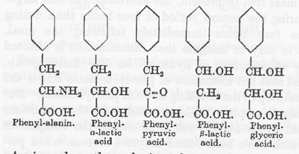
α−部位の置換基がベンゾイル化によって安定化されるとホモゲンチジン酸生成は阻止される。L. Blum（73）が見つけ出したようにベンゾイルフェニルアラニンはアルカプトン排泄を増加させなかったからである。
脱アミノはタンパク質を構成しているアミノ酸とくに芳香族アミノ酸の異化の初期に起きると信じているのは然るべき理由がある。タンパク質に富む食事をとるとホモゲンチジン酸の排泄は対応する窒素排出よりもずっと早くが終わることを Falta（74）は見出し、Langenstein、Meyer と Mittelbach（75）はタンパク質の多い食事摂取の２時間ないし３時間後にホモゲンチジン酸排泄の最高に達することを確認した。しかし私の行った観察（76）で短時間置きに１日中に取った尿標品では、タンパク質に富んだ食事摂取後の増加は明らかに認められたが、食事直後からの４時間よりもその後の４時間の排泄が多いこともあった。脱アミノは水酸基によるアミノ酸の置換によるものであって、フェニル−α−乳酸の生成がフェニルアラニン分解の最初の段階と考えることはできる。フェニル−α−乳酸は上のような条件を満足するだけでなく、肝臓を還流したときにアセトンを生ずる物質の１つである。しかし Otto Neubauer（77）の最近の観察はこの仮定を否定しているようである。彼自身が驚いたことにチロシンにとってフェニルアラニンとフェニル−α−乳酸の関係に相当するパラオキシフェニル−α−乳酸がアルカプトン尿者にホモゲンチジン酸排泄を増加させなかった。従って中間産物はたぶんケト酸であろうと彼は結論し、さらにパラオキシフェニルピルビン酸がアルカプトン排泄を増加させることを観察したことによってこの可能性は非常に増加した。
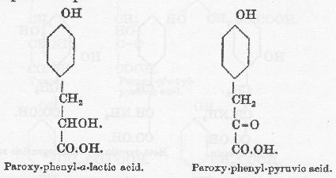
パラオキシ−フェニル−ピルビン酸およびホモゲンチジン酸のあいだに他の段階が入っていて、環の２と５の位置に水酸基が出現するのは側鎖の最終的な酸化の前かまたは同時のことであろう。もしもそうでなかったらパラオキシフェニル酢酸が作られ、これは中間産物として必要な性質を持っておらず、アルカプトン尿者によりホモゲンチジン酸に変化することはない。
ベンゼン環の構造は側鎖よりも重要である。Falta はジブロムチロシンおよびハロゲン化タンパク質がアルカプトン尿症においてホモゲンチジン酸の排泄を増やさないことを見出した。オルトチロシンおよびメタチロシンの両者はホモゲンチジン酸の水酸基のどちらかの位置に相当するところに水酸基を持っているが、これが無効であるという重要な観察をしたのは L. Blum（78）である。Otto Neubauer は、関連物質であるオルト−およびメタ−オキシフェニルピルビン酸でも同じであることを示した。
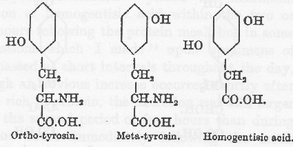
従ってパラの位置に水酸基があることはこの変化に邪魔でないだけではなくむしろ必要であり、環への変化は最初に考えられたようにパラ位置の水酸基が除かれるのではなくて、側鎖の移動によって起きる。このような移動は Erich Meyer（79）によって、トルイルヒドロキシラミンがトルイルヒドロキノンに変化する Bamberger（80）の観察の類推によって、最初に示唆されたもので多分キノン基と結合物を作る（81）のであろう。
Otto Neubauer は変化を次のようであろうとした。
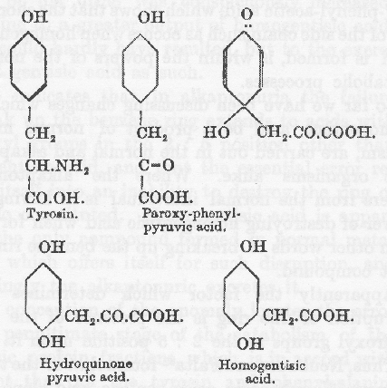
彼はこの系列における３番目の中間産物であるヒドロキノン・ピルビン酸を摂取して、これがホモゲンチジン酸の排泄を増加させるのに必要な力であることを見出したが、その増加は予想したよりも少なかった。
もしもキノン結合を持った化合物になる経路を実際に通るとしたら、フェニルアラニンがパラの場所にヒドロキシ基を得てチロシンに変化することは、それがさらに変化するのに予備的に必要なこととなる。オルト−またはメタ−チロシンを正常人に与えるとそれは対応するヒドロキシ−フェニル−酢酸として部分的に排泄されることを Blum が見つけだしたことは興味深い。このことはホモゲンチジン酸生成のときと同じように側鎖が短くなることであり、これは正常な代謝過程の能力の一部である。
これまでのところ我々はホモゲンチジン酸が正常代謝産物であったとしたら、正常者およびアルカプトン尿症のどちらでも同じように起きるであろう代謝変化を論じてきた。アルカプトン尿者が正常人と違っているのは、ホモゲンチジン酸が出来ると分解する能力――言い換えるとホモゲンチジン酸のベンゼン環を開裂させる能力――の無いことであった。
明らかにベンゼン環が開裂するには２：５の位置にヒドロキシ基のあることが重要なようである。
従って、３種のジヒドロキシ安息香酸のうちでゲンチジン酸だけは、全量の凡そ15%が尿中に芳香族硫酸エステルとして排泄されるものの、多くは人体内で燃焼されることを Neubauer と Falta（82）は観察した。ゲンチジン酸は同族体であるアルカプトンと同じようにヒドロキシ基は２と５の部位を占めている。
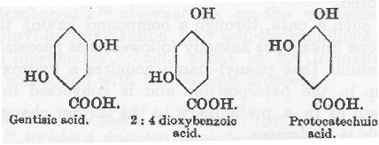
アルカプトン尿患者がゲンチジン酸を経口摂取すると尿の還元力が顕著に増加することを Neubauer と Falta は観察したが、これはホモゲンチジン酸の排泄増加ではなくてゲンチジン酸の排泄によるものであった。
このことはアルカプトン尿症患者にはホモゲンチジン酸以外の２：５に水酸基を持つベンゼン環を壊して酸にする能力が無く、このような環状の酸を壊す能力の無いことに本質的な異常の存在することを示している。ホモゲンチジン酸は正常代謝においてこのように分解される唯一の化合物のようであり、その結果としてアルカプトン尿症患者はこれを排泄する。
この芳香族アミノ酸異化の最後から２番目の段階に異常があるという概念は、内因性にせよ外因性にせよ、すべてのチロシンとフェニルアラニンが網に掃き寄せられてアルカプトン尿内のホモゲンチジン酸として排泄されるという事実に一致する。
正常代謝においてベンゼン環を分裂せるのは特異的な酵素によるものであり、さらに生まれつきのアルカプトン尿症においてはこの酵素が欠損し、病気の場合はこの働きが部分的または完全に阻害されている、と我々は考えることができるだろう。
G. Embden その他の肝還流実験は異変が起きているもっとも可能性のある座としてこの臓器を指し示した。しかしアセトン形成酵素に不全があるのだったらタンパク質の芳香性アミノ酸だけでなくロイシンもアセトン形成に貢献し同じように関与することが期待される。Hurtley 博士は親切にも大量のアルカプトン尿を検査して酸性にした後でエーテルで抽出し、エーテル抽出液の残差を水蒸気蒸留をしたが、脂肪酸系列の異常な酸を検出することができず、現在のところアルカプトン尿症においてロイシン異化経路のいかなる障碍の事実も存在しなかった。
第４章 シスチン尿症（省略）
第５章 シスチン尿症：続き（省略）
第６章 ペントース尿症（省略）
ギャロッドの「アルカプトン尿の発現：化学的個人差の研究」（1902）にはアルカプトン尿症をはじめとするギャロッド・４つ組がメンデルの劣性遺伝法則に従うことおよび、それらが一般に代謝異常によるものであることは記載されているが、どのような代謝異常であるかは著書「先天性代謝異常」（1909）に書かれている。
論文（1902）と著書（1909）のどちらか片方を訳すつもりだったが、後者には４つ組が発見され研究された歴史、正常人尿には無く患者の尿にだけある異常物質が実際は正常代謝の中間産物であること、何故に正常中間産物が患者で排泄されるか、これが何処でどのようにして作られるか、などが分かりやすく記載されている。従って著書も一部を翻訳してウェブに収めることにした。文献番号は残したが脚注の文献は省略した。リプリント版は３社から刊行されている。第２版は1923年はネットで全文を利用することができる。
翻訳は初版の第１章と第３章に限ったが、［英文］（作業者注：省略）の部に全文を掲載した。第１章は総論に相当するもので、代謝およびその異常の歴史的考察、尿排泄についての考察、および先天性代謝異常の遺伝、などが論じられている。第３章はアルカプトン尿症に関するものであり、この異常はギャロッドの言葉によると「もっともよく知っているものであり、これの研究によって多くのことを学んだもの」である。他の３種の代謝異常についての記載も興味深いが省略した。
この本を読んで感じたこととして、我々はアミノ酸の代謝を習ってからその代謝異常を知るが、歴史はその逆であって、尿中の異常物質から出発してアミノ酸代謝の知識に達した。アルカプトン尿はその代表であり16世紀（1584）の記載に始まり19世紀末（1891）にはホモゲンチジン酸排泄が原因であることが確立され、さらにそれが正常のアミノ酸代謝中間産物であることが判った。
ギャロッドは「一遺伝子一酵素説」の始祖と言われているので関連する記載を探したが控え目の記述しか見つからなかった。それが彼の性格によるものらしい。オクスフォード大学の内科学欽定教授であったが前任者のオスラーのように現代医学の父と崇められることはなかったようである。遺伝学会、優生学会、生化学会などをむしろ避けて、ただ病人の診察、尿の分析、医学教育に専念したと言われている。アルカプトン尿症発現がメンデル法則に従うことに「陽の目を当てた」のはベートソンであるとギャロッドは発言しているが、その前に気がついていたかどうかは不明である。ともかく控え目の性格の学者だったようである。
アルカプトン尿症の遺伝子異常については前に述べた。ペントース尿症は1892年に発見されキシリトールデヒドロゲナーゼ欠損症である。シスチン尿症は二塩基アミノ酸輸送機構の障碍によるものである。なおシスチンはイギリスの医師・化学者のウォラストンが1801年に膀胱結石に発見した物質でシストは膀胱のことである。白皮症の一部はチロシナーゼ異常による。
訳語について一言。この本でギャロッドは inborn と congenital を区別して、前者は遺伝が関係する「先天性」、後者は子宮内感染なども含む「生まれつき」、のものに使っているので、訳語もそれに従って区別した。しかし1902年の論文では inborn に相当するものもすべて congenital としているので訳語にも「先天性」を使った。